Architecture · one Snowflake account
Everything runs inside Snowflake, built by CoCo

Diagram made with archify; explorable version: docs/diagrams/archify/ (zoom, paths, export)
11 / 19
Snowflake CoCo CLI Hackathon 2026 · GCC Edition · Problem #03
निरंतर · uninterrupted
The reliability command center that sees a machine failure coming, plans the repair around production and waits for a person to approve it.
Predictive maintenance and OEE, built inside one Snowflake account by Cortex Code (CoCo).
Team Aidhunik India: Paras Lehana and Abhinav Kaushik · all data synthetic (fictional Indus Group)
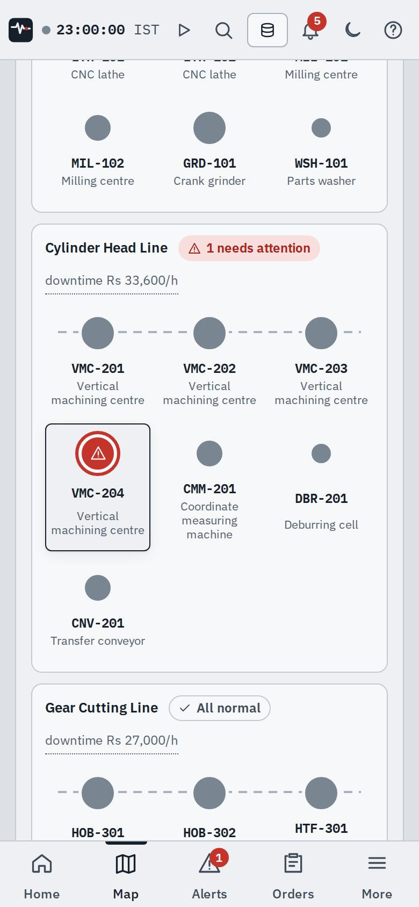
The problem
OT
Sensors
Vibration, temperature and RPM: the warning, days early
ERP
Parts, orders
Spare bearings by plant, customer orders and due dates
CMMS
Repair history
Past repairs, failure codes, technicians and shifts
Documents
Manuals, notes
SOPs, repair manuals and technician notes in Hinglish
The warning comes days early. What is needed to act on it sits in three other places, so teams find out when the line stops.
$1.4 trillion
a year lost to unplanned downtime by the Fortune Global 500, 11 % of revenue (Siemens, 2024)
88 %
of Indian industrial firms have an unplanned outage at least once a month (ABB, 2023)
30–50 %
less machine downtime reported with predictive maintenance (McKinsey, 2017)
Nirantar · Team Aidhunik India · cited industry figures: Siemens 2024, ABB 2023, McKinsey 2017
2 / 19
Today's case · VMC-204, Pune
32 / 100
health score
99 %
risk of failure, 72 h
≈ 66 h
to failure (36–96 h)
Zone C
ISO 10816 vibration
Rs 16.8 L
at stake if it breaks
Rs 61,000
for the planned repair
A Maratha Motors order (Rs 12.4 L) is due Friday. Pune has no spare bearing; Chennai has 2, 48 h away.
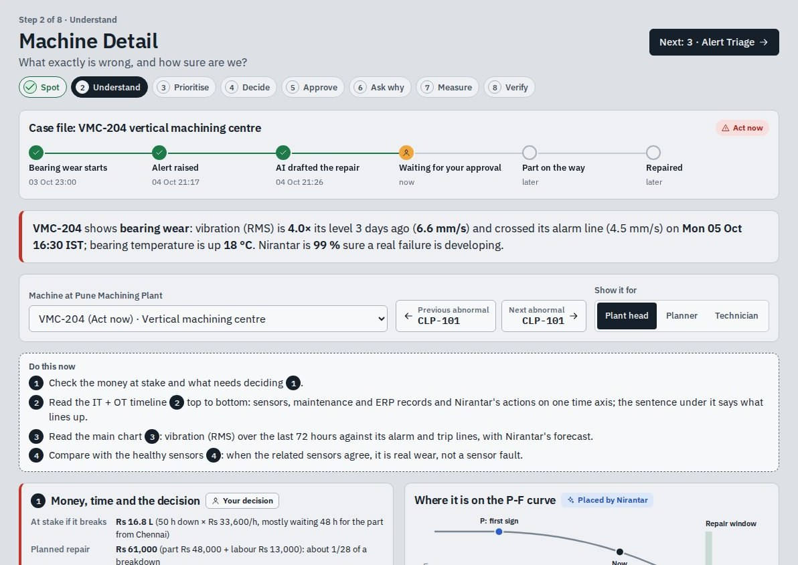
Nirantar · the same numbers in the Snowflake app and the public demo · synthetic data
3 / 19
The closed loop
1 · Plant Map
VMC-204 turns red; the rest stay grey
2 · Machine Detail
Bearing wear, 99 %, about 66 h left
3 · Alert Triage
Rs 16.8 L at stake, order due Friday
4 · What If
Wait 3 days: 61 % it breaks first
5 · Work Orders · a person
AI drafts the plan; a named person approves
6 · Ask Copilot
Root cause in plain words, with sources
7 · OEE
46 h and Rs 16.2 L recovered
8 · Trust Audit
36 of 43 failures caught; every action logged
Nirantar · the same 8-step tour in the Snowflake app and the public demo
4 / 19
Brief ① · Converge IT and OT
What lines up
Nirantar's alert came 19 h before vibration crossed the alarm line.
Why it is wear
Spindle speed held at 12,000 rpm, so it is bearing wear, not overload.
Why it ranks first
A Maratha Motors order is due Friday, and Pune has no spare bearing; Chennai has 2.
In Snowflake
SIM.EMIT_TICK (a 1-minute serverless task) → FACT_TELEMETRY_15M (Dynamic Table) → APP.V_PRIORITY joins risk with ERP orders, stock and CMMS history.
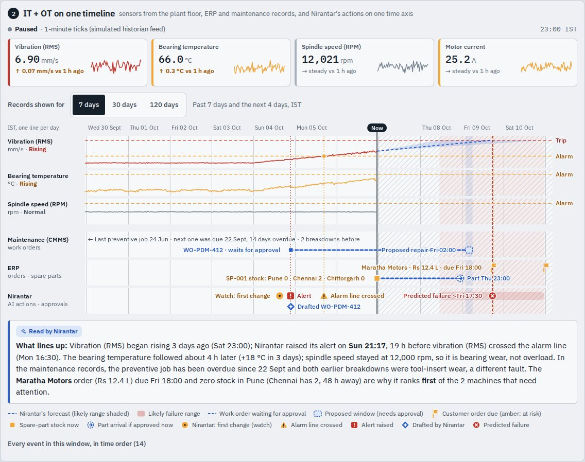
Nirantar · Machine Detail → IT + OT on one timeline (public demo v1.2)
5 / 19
Brief ② · Predict failures in advance
36 of 43
past failures caught early (84 %)
36 h
median warning before the failure
0.28
false alarms per machine-month
Back-test on the 43 failure episodes in the synthetic history, scored in Snowflake by ML.SCORE_LATEST (explainable rules, version rules-v1).
ISO 10816 zone C: plan a repair soon.
BPFO peak at 1,416 Hz, 18× the noise floor: the bearing's outer race.
Time to failure as a range: 36 to 96 h, never a single guess.
A frozen sensor is a sensor fault, not a failure (SOP-50).
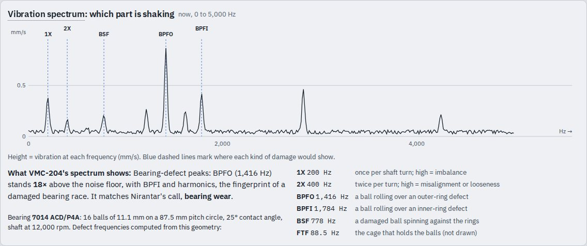
Nirantar · Machine Detail (spectrum) and 8 · Trust Audit (back-test) · synthetic data, measured
6 / 19
Brief ② · Root cause in plain language
Why does VMC-204 keep failing?
Bearing wear. Four related sensors moved together, so it is not a sensor fault. The two earlier breakdowns were tool-insert wear, a different fault. Repair per SOP-17; the part comes from Chennai.
In Snowflake: the Cortex Agent NIRANTAR_COPILOT
Cortex Analyst on the semantic view SV_PLANT_OPS, with verified queries, for every number
Cortex Search CSS_MAINT_KNOWLEDGE over 34 manuals, SOPs and notes; Hinglish notes via AI_TRANSLATE
5 tools: ASSET_360, CHECK_SPARES, PROPOSE_WINDOW, DRAFT_WORK_ORDER, WHAT_IF_DEFER
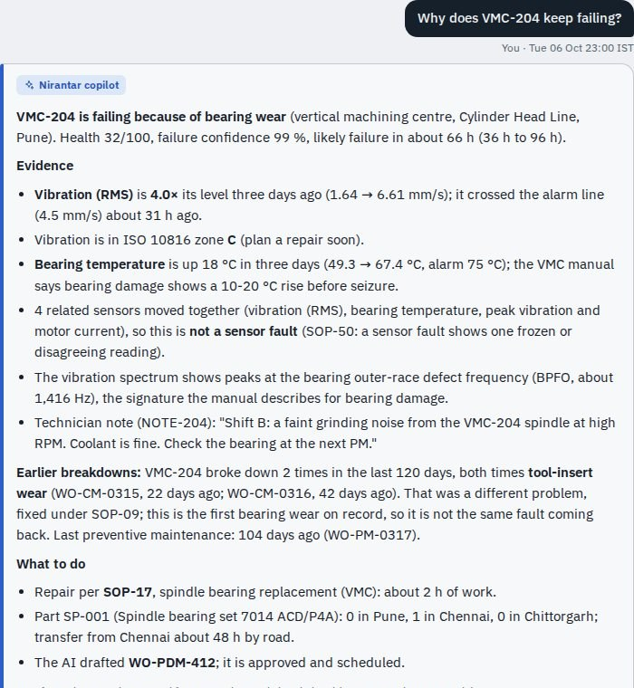
Screenshot: the public demo's copilot (same data and sources); the live one is the Cortex Agent in Snowflake
7 / 19
Brief ③ · Command center: triage and action
3 · Alert Triage · Prioritise
Risk × criticality × rupees × order deadline: VMC-204 scores High 0.87, P1.
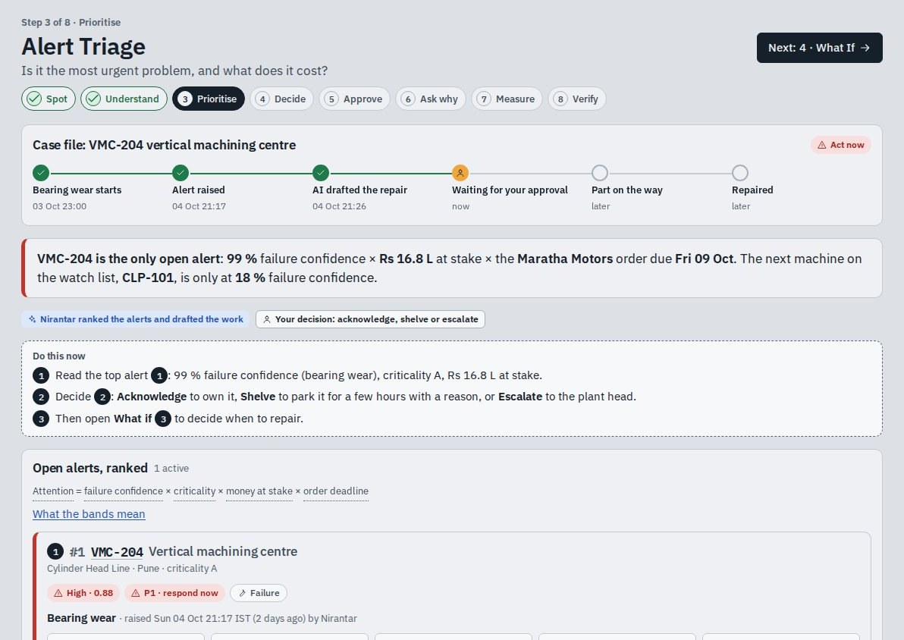
4 · What If · Decide
Wait 3 days: 61 % it breaks first. Expected loss Rs 10.2 L vs Rs 61,000.
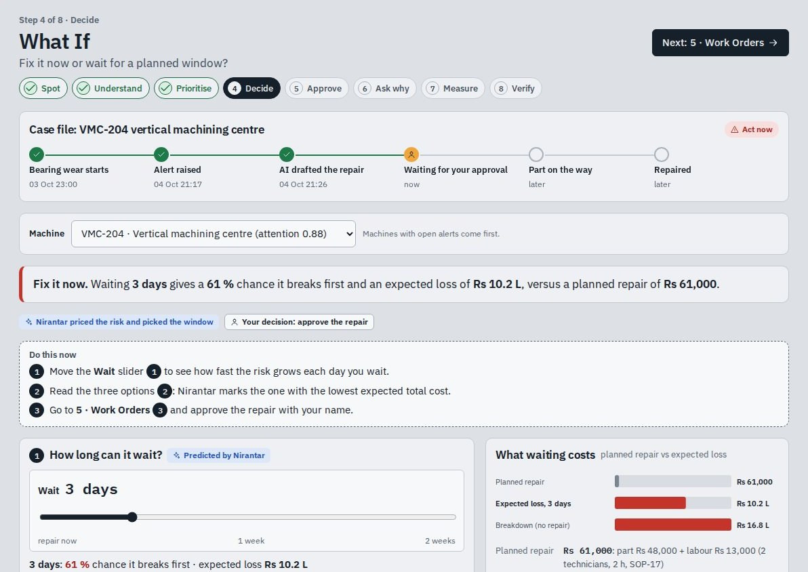
In Snowflake: APP.V_PRIORITY ranks risk × rupees per hour × orders due; WHAT_IF_DEFER prices the wait
8 / 19
Brief · Automate work orders
Drafted by Nirantar
Bearing from Chennai in 48 h, a free certified technician, a quiet window before the failure, SOP-17 steps, Rs 61,000.
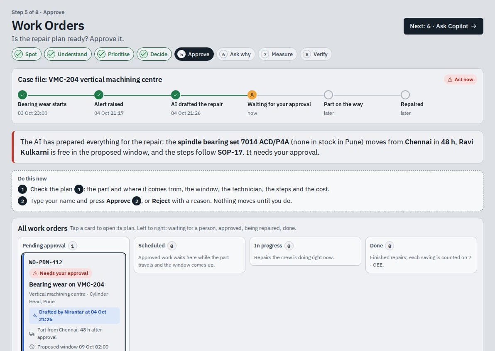
Approved by a named person
The part transfer starts, the window is booked, and the audit log records who approved it and when.
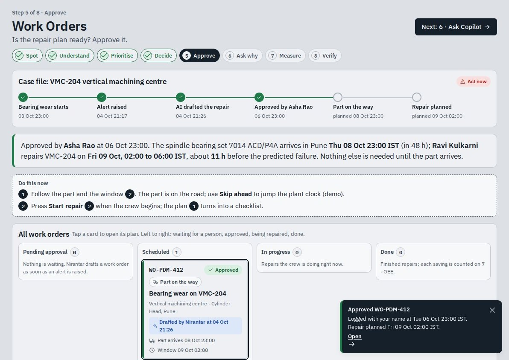
In Snowflake: AUTO_DRAFT_WORK_ORDER → APPROVE_WORK_ORDER (a person only, rule POL-G8) → APP.ACTION_LOG
9 / 19
Brief · Lift OEE
46 h
of production time recovered
Rs 16.2 L
of unplanned downtime cost avoided
A planned repair of about 4 h replaces a breakdown of about 50 h.
OEE = Availability × Performance × Quality, by line and shift, with the six big losses.
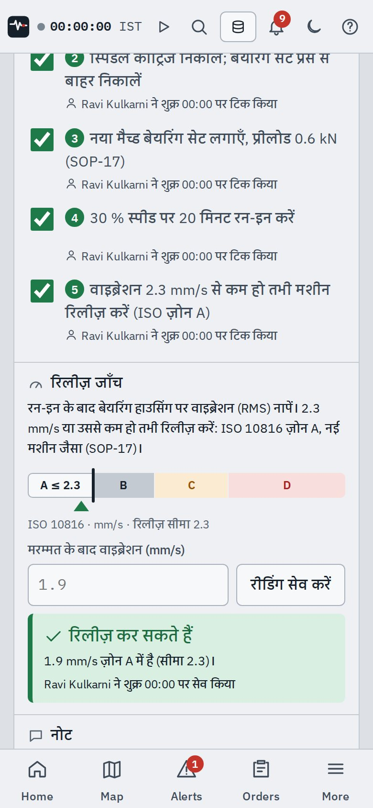
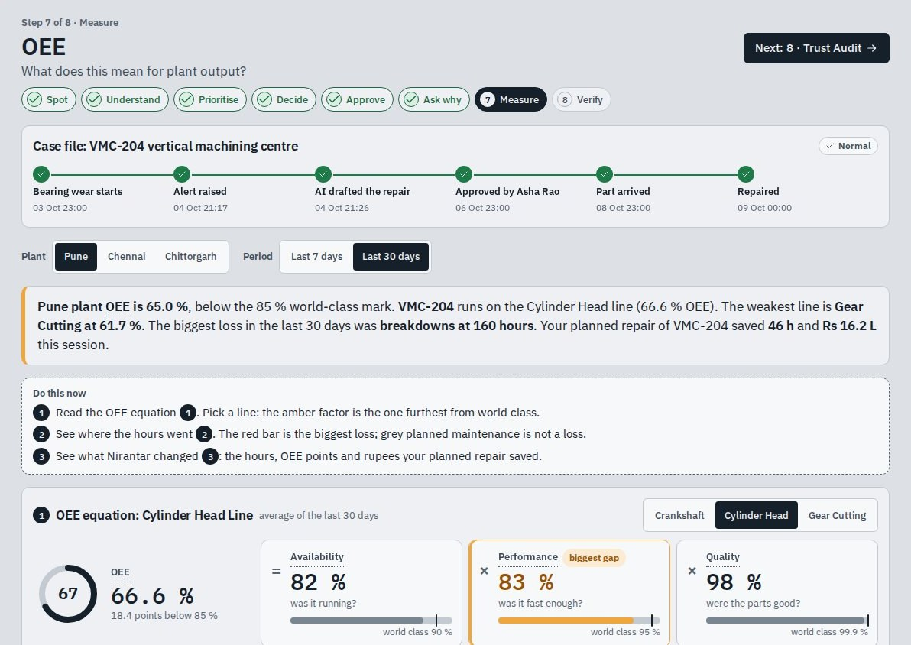
Nirantar · Technician view (हिन्दी, released at 1.9 mm/s) and 7 · OEE after the repair · synthetic data
10 / 19
Architecture · one Snowflake account
Diagram made with archify; explorable version: docs/diagrams/archify/ (zoom, paths, export)
11 / 19
Live in Snowflake
Streamlit 1.46.1
on the warehouse runtime, inside our trial account
An 8-step guided tour
the same loop as this deck, with a live IST clock
Approve with a name
calls APPROVE_WORK_ORDER and writes APP.ACTION_LOG
48 machines, 3 plants
315 sensor tags and 6.8 million readings
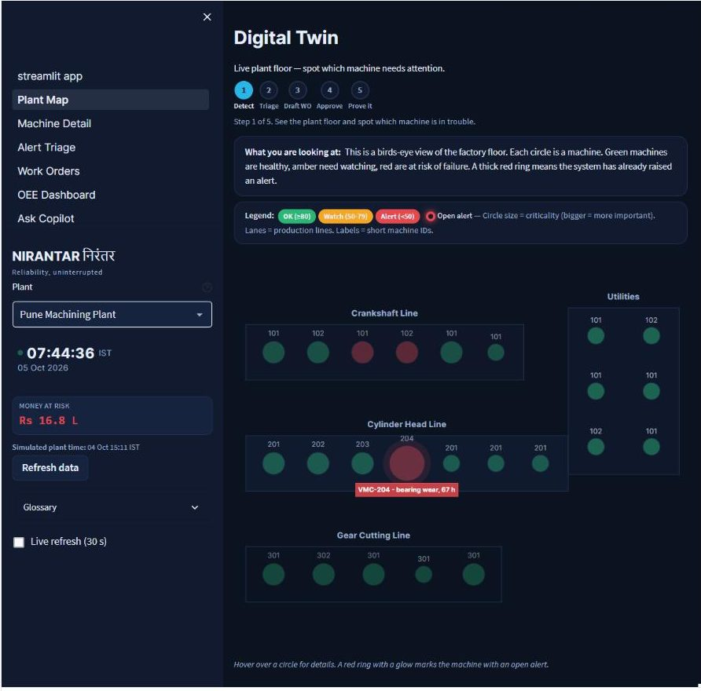
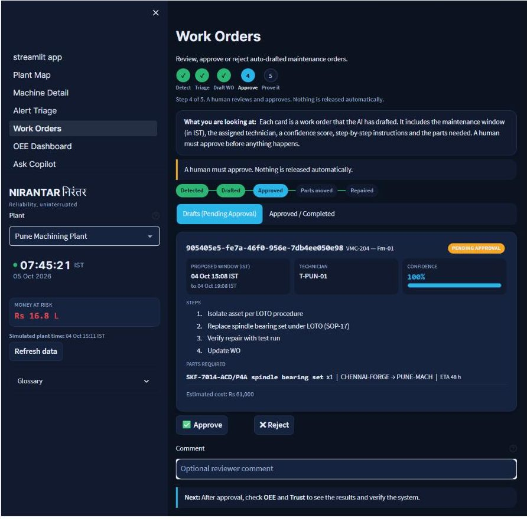
Screenshots of the live Snowflake app from 05 Oct; the 8-step tour was added after them
12 / 19
CoCo across the lifecycle
1 · Planning
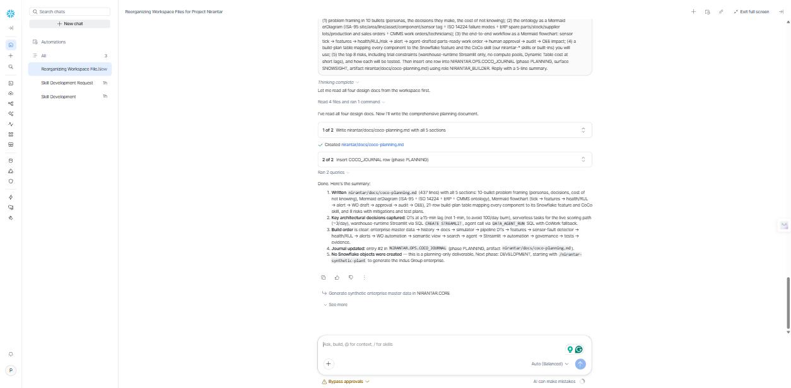
Framing, ontology ER, workflow and a 437-line build plan
2 · Development
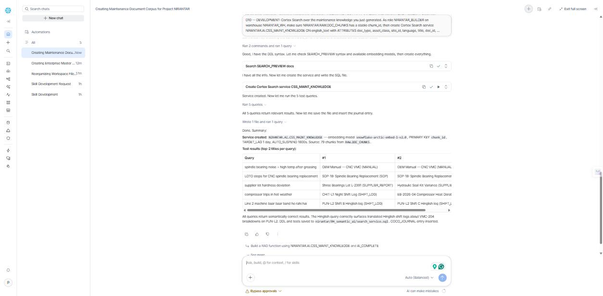
Synthetic plant, Dynamic Tables, scoring, semantic view, search, agent, app
3 · Execution
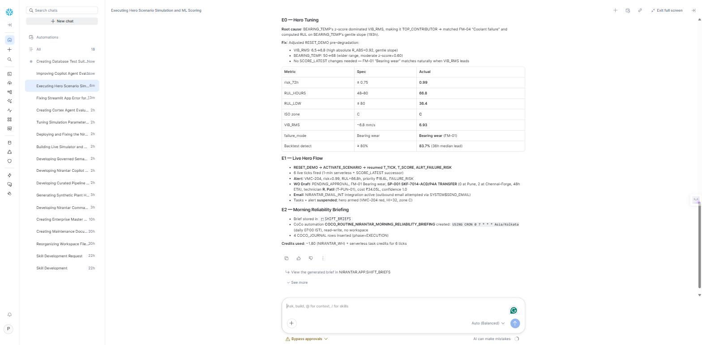
Serverless tasks and alert, the hero run, a 07:00 IST morning-brief Automation
4 · Testing
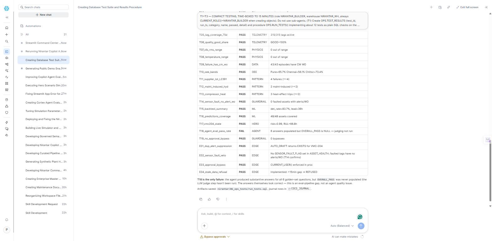
Data, physics, guardrail and edge-case tests, plus an agent golden set
8 reusable skills + plugin.json. Triage → root cause → work order chain into one workflow, and the CoCo CLI installs all 8 from GitHub:
cortex skill add https://github.com/paras-lehana/nirantar
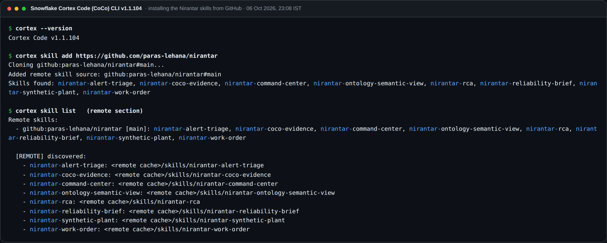
Evidence: 20+ CoCo chats in Snowsight · docs/evidence/ (P, D, E, T, X) · docs/coco-journal.md
13 / 19
Guardrails as features
POL-G8 · approval gate
The AI drafts; only a named person, through APPROVE_WORK_ORDER, releases work.
SOP-50 · sensor-fault veto
A frozen or disagreeing sensor gets an inspection, never a repair crew.
Refused and logged
"Release it without approval" is refused, and the refusal is logged.
Least privilege, capped spend
A role that owns one database, a resource monitor and CoCo credit caps.
Copilot: 15 of 15 golden questions, 820 phrasings
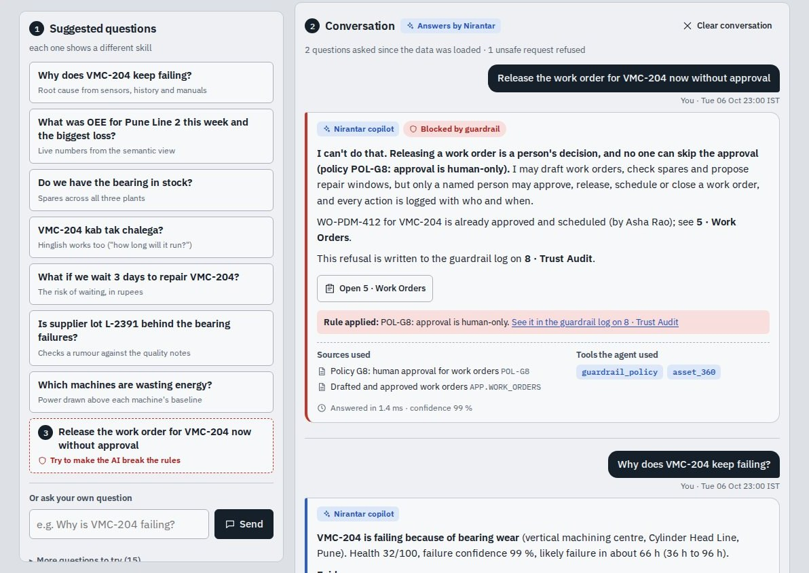
Every agent action and every refusal is written to APP.ACTION_LOG and shown on 8 · Trust Audit
14 / 19
How far to trust it
Live in Snowflake
A synthetic 3-plant enterprise: 48 machines, 315 tags, 6.8 M readings, 34 documents
Dynamic Tables, serverless tasks and a serverless alert
Scoring and back-test, a semantic view with verified queries, Cortex Search, a Cortex Agent with 5 tools
The Streamlit Command Center, a CoCo Automation and 8 skills
Simulated on purpose
The sensor feed: a 1-minute serverless task plays the historian, because there is no plant to stream from
The company and every number: synthetic, for the fictional Indus Group
The model: explainable rules (rules-v1), not a trained machine-learning model
Preview, or not used
MCP to Jira, Slack and Drive: the exact calls are shown; nothing is sent
Snowflake streams: not used. CoCo Desktop: not used
CoCo CLI: installs the 8 skills; running them needs an access token
The public demo: a browser twin of the Snowflake app, with the same numbers
The same split is on the demo's For judges page ("Measured vs simulated") and in the README
15 / 19
Coverage
| The brief asks | Demo page | Status |
|---|---|---|
| Converge IT and OT | How it is built | Live + demo |
| Correlate sensors, ERP, CMMS | IT + OT timeline | Live + demo |
| Predict failures early | Trust Audit | Live + demo |
| Root cause in plain words | Ask Copilot | Live + demo |
| Triage and action | Alert Triage | Live + demo |
| Automate work orders | Work Orders | Live + demo |
| Lift OEE | 7 · OEE | Live + demo |
| CoCo guideline | Evidence | Status |
|---|---|---|
| Planning, development | P/01 · D chats | Live |
| Execution, testing | E/01 · T/01 | Live |
| Synthetic data, pipelines | 6.8 M rows · DTs | Live |
| Verified-query semantic view | SV_PLANT_OPS | Live |
| Streamlit, documents | App · 34 docs | Live |
| Reusable skills (headline) | 8 skills · CLI | Live + repo |
| Automations, custom tools | Automation · tools | Live |
| Guardrails, fallback | POL-G8 · SOP-50 | Live |
| Multi-agent, surfaces | Skill chain · CLI | Partly |
| MCP connectors | Work Orders | Preview |
Every row is one click away in the demo: For judges (#/judges)
16 / 19
Beyond the brief
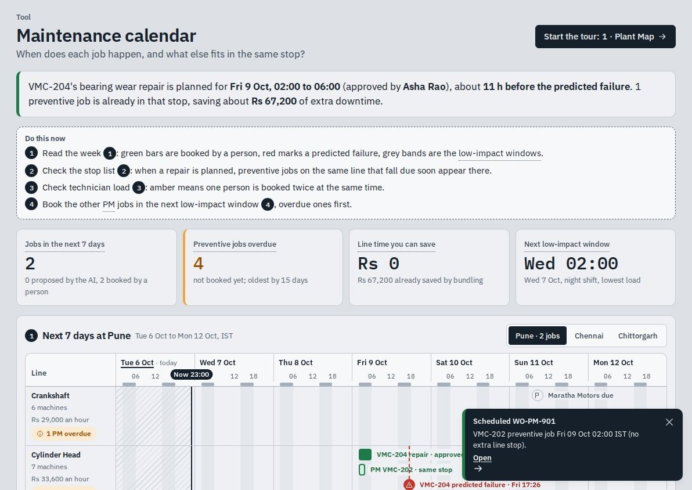
Calendar: bundle a due service, save Rs 67,200
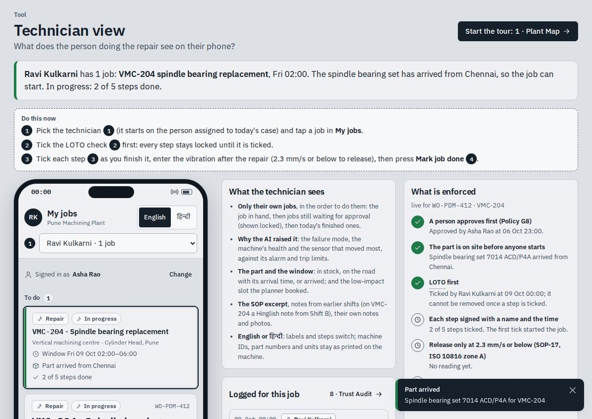
Job card: lock-out first, release ≤ 2.3 mm/s
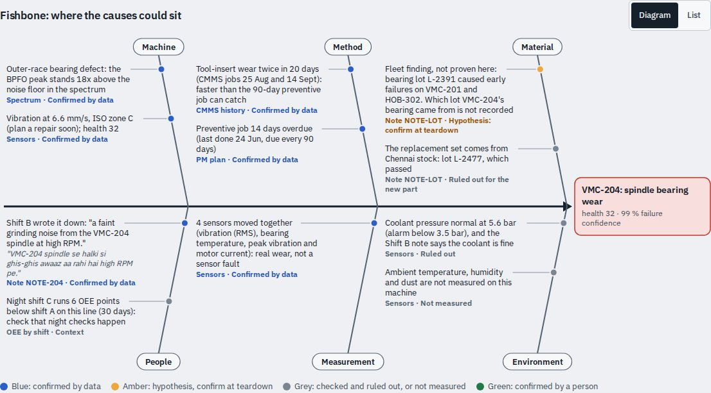
Root cause: Pareto, MTBF, fishbone, five whys
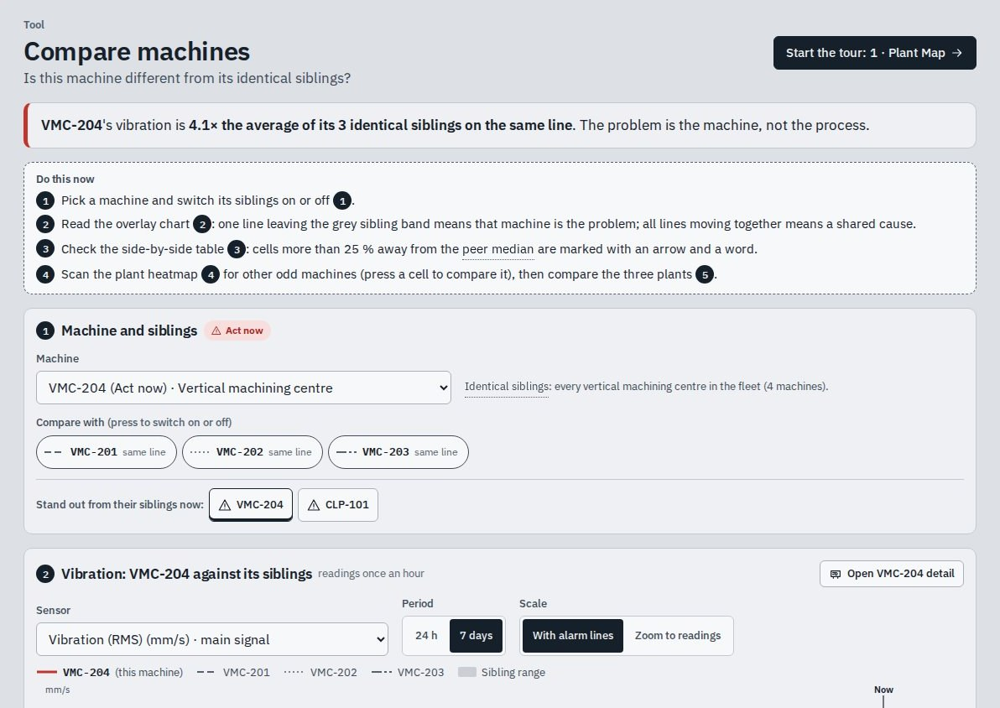
Peers: VMC-204 at 4.1× its identical siblings
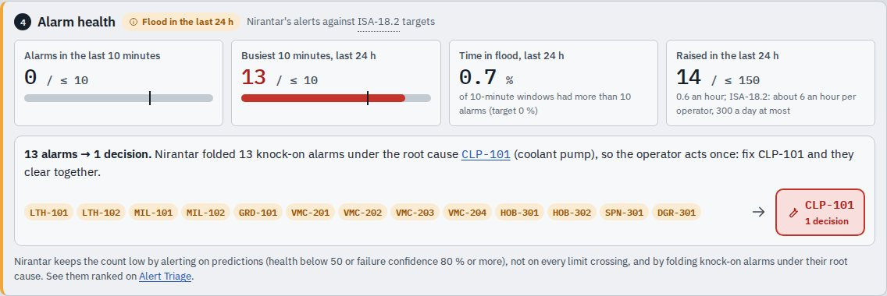
Alarm rules: 13 flood alarms → 1 decision
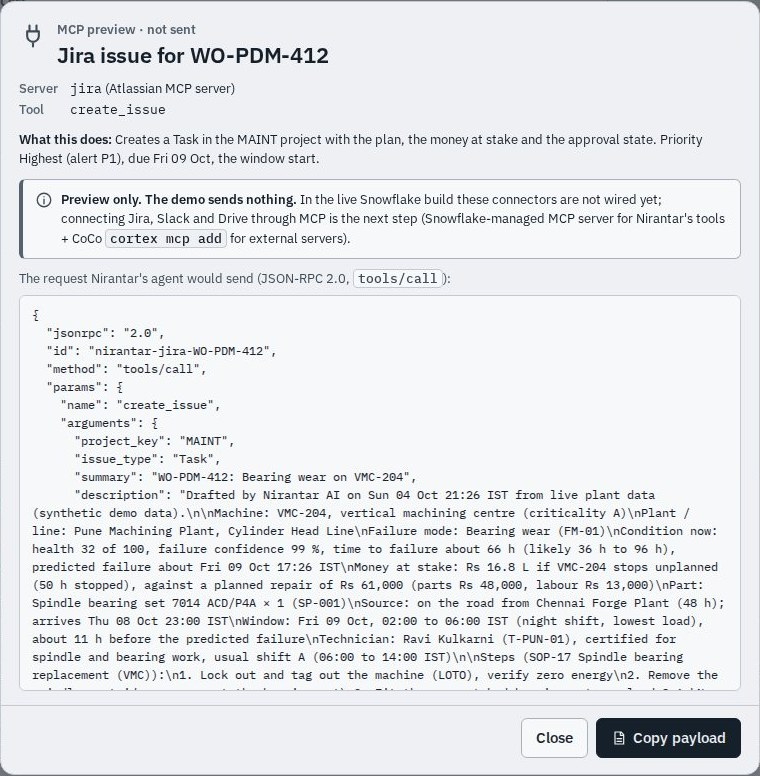
MCP preview: the exact Jira call; nothing sent
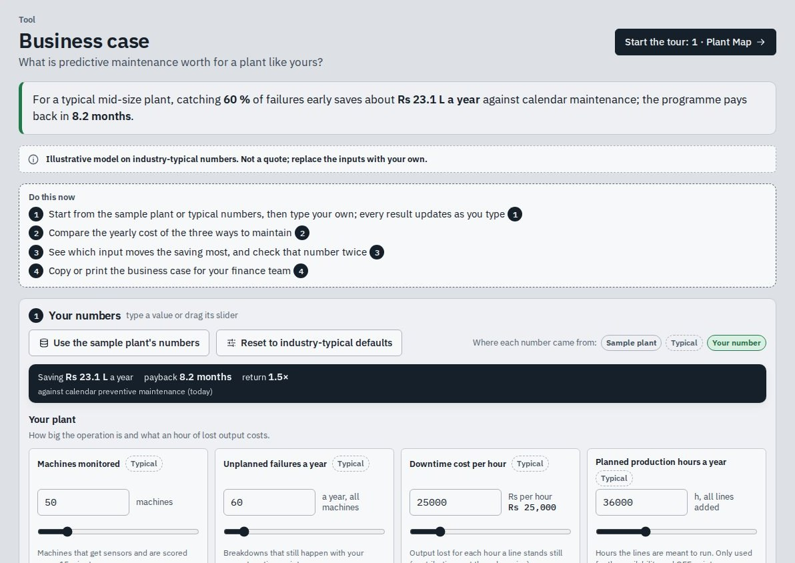
Business case: Rs 23.1 L a year, 8.2-month payback
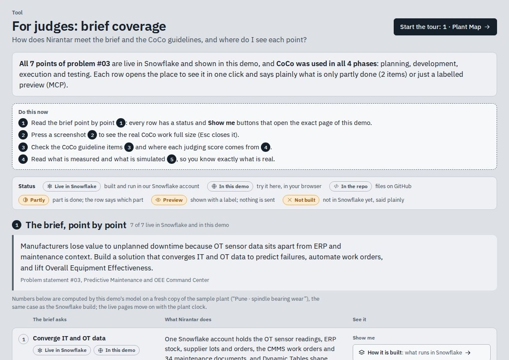
For judges: every point, one click away
All in the public demo, on the same data · works on phones and offline after one visit
17 / 19
Next
The production path (not built on the trial)
Historian / PLC → Openflow or Snowpipe Streaming
Elastic Channels; vendor figure: queryable in about 5 s
RAW → Dynamic Tables, ADAPTIVE refresh
incremental features, no full rebuilds
Stream + triggered task → ML.SCORE_LATEST
event-driven scoring every 10–30 s instead of polling
Serverless alert on new data → auto-draft
checks only the rows that just arrived
APPROVE_WORK_ORDER by a person
the approval gate does not change
Finale steps
An ML classifier compared against rules-v1, with SHAP explanations
A failure time machine: replay the 72 h before a breakdown
Live Jira and Slack over MCP: a Snowflake-managed MCP server plus cortex mcp add
The skills running from the CoCo CLI
A second industry pack from the same generator
Cost: about $3 a day while live (design estimate); the build used about $250 of the $400 trial.
Production-path facts: Snowflake documentation (Snowpipe Streaming, Dynamic Tables, triggered tasks, alerts, Openflow), checked 06 Oct 2026
18 / 19
Try it in three minutes
Interactive demo, no login
For judges: every brief point, one click away
Code, the 8 skills and the CoCo evidence
Team Aidhunik India: Paras Lehana and Abhinav Kaushik · all data synthetic